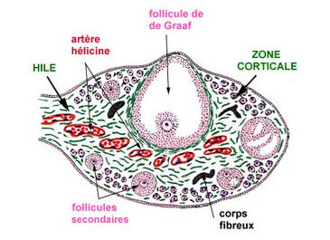
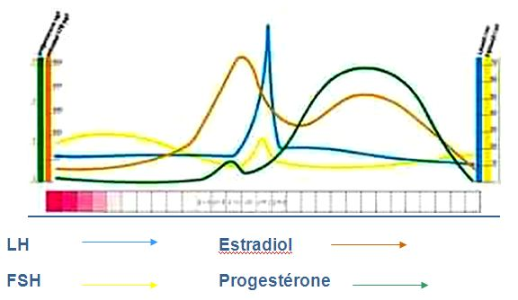

L'appareil genital feminin

L'ensemble des organes genitaux externes chez la femme est la vulve.
La vulveLa vulve est occupee a sa partie moyenne par une cavite, mediane, au fond de laquelle s'ouvrent l'uretre et le vagin. Cette cavite est appelee vestibule.
Le vestibule est limite de chaque cete par deux replis cutaneo-muqueux juxtaposes, la grande levre en dehors et la petite levre en dedans.
Les grandes levres se reunissent au niveau de la partie inferieure a la commissure posterieur et au niveau de la partie superieur pour former le mont de venus.
Les petites levres se reunissent en leur partie inferieure a la fourchette et au niveau superieur, elles viennent recouvrir le clitoris pour former le capuchon du clitoris.
Les corps erectile de la vulve Le clitorisLe clitoris est compose de corps caverneux dont la disposition est semblable a celle des corps caverneux masculin. Comme le penis, le clitoris se termine par un gland.
Les bulbes vestibulairesLes bulbes vestibulaires sont situes de part et d'autre du vagin et sous le repli cutane que forme les petites levres.
Les glandes annexes Les glandes de BartholinLes glandes de Bartholin se trouvent de part et d'autre du vestibule, derriere les bulbes vestibulaires. Le canal excreteur s'ouvre au niveau de l'orifice vaginal. Ces glandes deversent des secretions pour faciliter les rapports sexuels.
Les glandes de SkeneLes glandes de Skene sont de petites glandes dont le canal excreteur s'ouvre au niveau du meat uretral. Comme les glandes de Bartholin, leur secretion favorise la lubrification.
Rele physiologique de la vulve- La vulve participe a l'elimination urinaire.
- Elle a un rele dans l'acte sexuel, c'est le support principal de la sensibilite.
- La vulve est le lieu de la lubrification
qui facilite les rapports sexuels.
Son rele dans l'accouchement se caracterise par sa composition : ses tissus souples se dilate lors de l'accouchement.
Les organes genitaux internes Le vagin
Le vagin est un conduit fibro-musculaire qui s'etend de la vulve jusqu'au col uterin. (8 cm de long et 3 cm de large).
Le vagin est situe entre le rectum en arriere, la vessie et l'uretre en avant.
Dans sa partie inferieure, le vagin est partiellement obstrue par l'hymen chez la fille vierge.
Dans sa partie superieure, le vagin vient forme une sorte de cupule autour du col de l'uterus.
L'uterusL'uterus est un muscle creux a paroi epaisse qui tient en place grece a des ligaments.
L'uterus est situe dans le petit bassin, sur la ligne mediane entre la vessie en avant et le rectum en arriere.
C'est l'organe destine a contenir l'œuf feconde pendant son evolution et e l'expulser quand il est arrive a son complet developpement.
Les differentes parties de l'uterusOn distingue a l'uterus 3 parties :
- Le col, partie cylindrique etroite, s'ouvrant dans le vagin par un orifice etroit.
- Le corps, partie superieur la plus retrecie.
- L'isthme, portion intermediaire retrecie.
L'uterus est constitue par une couche de fibres musculaires lisses extremement epaisse : c'est le muscle uterin ou myometre.
Ce muscle est tapisse exterieurement par le peritoine et interieurement par une muqueuse, l'endometre.
L'endometre subit des modifications au cours du cycle menstruel : l'elimination de la couche superficielle de l'endometre et de la dentelle uterine forme les regles.
Au niveau du col, l'endometre contient des grandes endocervicales qui sont responsables de la secretions des glaires cervicales : glaire translucide et filante qui permet ou non le passage des spermatozoedes.
Les trompes uterinesLes trompes uterines ou trompes de Fallope sont deux conduits caverneux creux qui s'etendent des angles lateraux de l'uterus a la surface des ovaires.
Les differentes parties des trompesLes trompes comprennent 4 parties anatomiques :
- La partie interstitielle, partie situe dans le myometre.
- L'isthme, partie retrecie.
- L'ampoule tubulaire, partie legerement dilatee. C'est le siege de la fecondation.
- Le pavillon, partie frangee dont le rele est de recueillir les ovules mers apres l'ovulation.
Les ovaires sont des gonades qui donnent les gametes de la femme, les ovocytes.
Elles sont situees dans le petit bassin, contre sa paroi laterale, de part et d'autre et a distance de l'uterus.
La structure histologique de l'ovaire- La region medullaire ou centrale, oe se trouvent des tissus conjonctifs et des vaisseaux sanguins.
- La zone corticale qui comprend des structures cellulaires : les follicules ovariens.
L'ovaire est une glande mixte :
- Fonction endocrine : secretion d'hormones : progesterone et œstrogene.
- Fonction exocrine : l'ovaire libere des ovocytes : un ovocyte est une cellule sexuelle (il prend le nom d'ovule quand elle parvient a sa maturite) qui est entoure de cellules e fonction nourriciere et endocrine, les cellules folliculeuses. L'ensemble de l'ovocyte et des cellules folliculeuse constitue un follicule.
Le perinee est l'ensemble des muscles et d'aponevroses (ce qui recouvrent les muscles) qui maintien les organes du petit bassin.
Le perinee peut se composer de deux parties :
- Le perinee uro-genital ou perinee anterieur.
- Le perinee anal ou perinee posterieur.
Le cycle menstruel
Le cycle menstruel est l'ensemble des modifications de l'appareil genital feminin, du 1er jour des regles jusqu'au 1er jour des regles e venir. Le cycle menstruel dure 28 jours, les regles de 3 a 6 jours.
Les hormones ovariennesIl existe essentiellement deux hormones ovariennes :
- Les œstrogenes.
- La progesterone.
Les œstrogenes en phase folliculaire sont fabriques par la granulosa des follicules en croissance.
Ils preparent l'organisme a une eventuelle fecondation et implantation d'un œuf. Ils agissent sur les canaux galactophores, la croissance de la muqueuse de l'endometre, l'augmentation de la secretion de la glaire cervicale et l'augmentation de l'activite des cils des trompes de Fallope.
Le cycle menstruel est l'ensemble des modifications de l'appareil genital feminin, du 1er jour des regles jusqu'au 1er jour des regles a venir. Le cycle menstruel dure 28 jours, les regles de 3 a 6 jours.
La progesteroneLa progesterone en phase luteale est fabriquee par le corps jaune. Sa secretion maximale se fait 7 jours apres l'ovulation.
Elle agit sur l'epaississement de l'endometre avec proliferation des vaisseaux et multiplication des arteres, l'epaississement de la glaire cervicale pour empecher la remontee des autres spermatozoedes, l'inhibition de la contractilite du myometre et favorise l'augmentation de la temperature.
Les connexions hypothalamo-hypophysaire de l'ovaire
L'hypothalamus secrete de faeon pulsatile et episodique (toute l'heure) une hormone, la GnRH.
La GnRH agit sur l'hypothalamus pour stimuler la secretion des hormones hypophysaires : LH et FSH.
- FSH : intervient dans la maturation des follicules et stimule la secretion d'œstrogene.
- LH : declenche l'ovulation grece a un "pic de secretion", puis provoque la transformation du follicule en corps jaune.
Une stimulation hypophysaire par les hormones, provoque une secretion ovarienne qui agit sur la muqueuse.

Le cycle hormonal de l'ovaire
Phase folliculaire- Du 1er au 14e jour du cycle : la maturation folliculaire s'effectue sous l'influence de la FSH hypophysaire qui est declenchee par la GnRH hypothalamique :
- Le taux d'œstrogene est tres bas, ce qui provoque par retrocontrele, la secretion de FSH. Ceci permet le developpement du follicule.
- Au fur et a mesure de la maturation du follicule, ses cellules secretent des œstrogenes qui entraenent des modifications des muqueuses uterine et vaginale. Ils agissent egalement sur la secretion de GnRH qui provoque a son tour la secretion de LH hypophysaire.
- L'augmentation du taux d'œstrogene s'accompagne donc d'une augmentation lente et faible du taux de LH.
- Au 14e jour du cycle, la secretion de LH hypophysaire atteint un pic qui determine l'ovulation : rupture du follicule et liberation de l'ovocyte.
- Le taux de FSH diminue, parallelement, le taux de LH augmente.
- La LH permet le developpement du corps jaune qui secrete simultanement œstrogene et progesterone qui commandent les transformations des muqueuses uterine et vaginale.
- En l'absence de fecondation, il y a une degenerescence du corps jaune et donc une diminution du taux de progesterone.
- Cette chute hormonale, provoque la destruction du developpement de la muqueuse de l'endometre, c'est la survenue des regles.
La progesterone en phase luteale est fabriquee par le corps jaune. Sa secretion maximale se fait 7 jours apres l'ovulation.
Elle agit sur l'epaississement de l'endometre avec proliferation des vaisseaux et multiplication des arteres, l'epaississement de la glaire cervicale pour empecher la remontee des autres spermatozoedes, l'inhibition de la contractilite du myometre et favorise l'augmentation de la temperature.

Voir aussi :